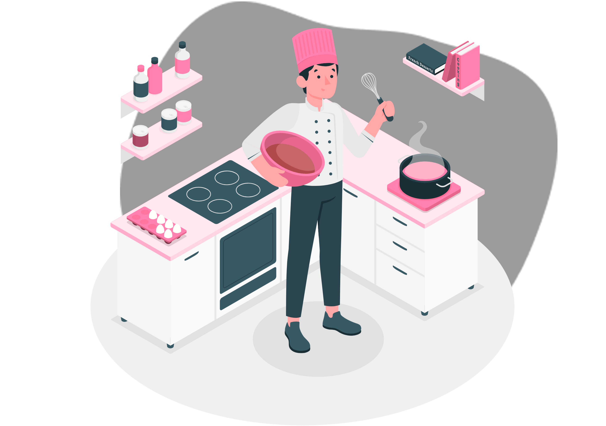

RECETAS CASERAS
No existe modernidad sin una buena tradición
Descubre las Recetas de Cocina Casera fáciles y para todos los bolsillos. Recetas diárias con Menú Semanales, Viajes y gastronomía de todo el Mundo.


Descubre las Recetas de Cocina Casera fáciles y para todos los bolsillos. Recetas diárias con Menú Semanales, Viajes y gastronomía de todo el Mundo.
El aperitivo es la comida ligera que se toma para abrir el apetito, antes de la comida principal del mediodía o antes de la cena.
Receta
El plato principal o segundo plato de una comida, es el segundo de los dos tiempos que se sirven en un menú tradicional europeo. Por lo tanto, prosigue al primer plato o entrante, y precede al postre.
RecetaEl postre es el plato de sabor dulce o salado que se toma al final de la comida, o de merienda. Cuando se habla de postres se entiende alguna preparación dulce, bien sean cremas, tartas, pasteles, helados, bombones, etc.
Receta